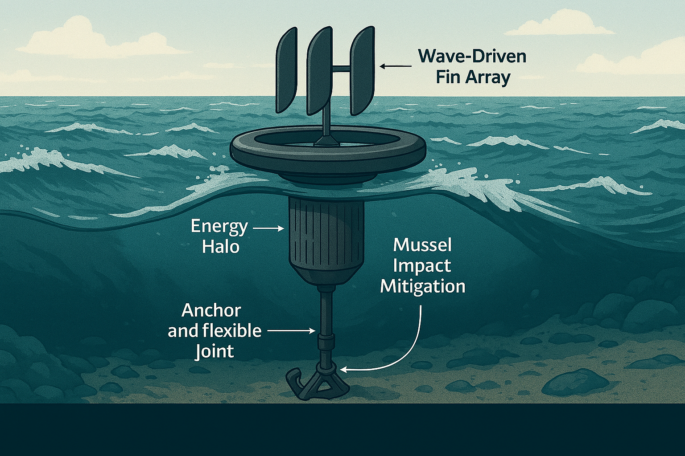

Resilient Systems for an Unpredictable World
A resilience‑focused technology platform designed to help communities, facilities, and critical operations remain functional during disruption.

Conceptual system illustration — pilot‑ready architecture under development.
The NeverDie System is built around deployable, modular hardware designed to operate in real‑world environmental conditions. The system integrates wave‑driven energy capture, anchoring and flexible joints, and impact‑mitigation design to maintain function under stress.